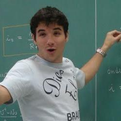

Alexandre Marangoni Costa
Software Engineer

alexandremcost@gmail.com
linkedin.com/in/alexandre-marangoni
github.com/alexandremcosta
Bio
Alexandre wrote his first code at 14 years old. First an IRC client (from mIRC), then a game built on Open Tibia Server.
After getting the bachelor degree in Computer Engineering at PUC-Rio, he worked for 8 years as a software engineer.
He got a scholarship to spend 2 years researching machine learning and applying it to meteorological data and computer poker agents, during a master degree.
He wrote a framework in Ruby and Python programming languages, to support the creation of Poker bots that can learn as they play against each other.
With the framework, he created 5 different players and researched how their learning rate differed. The process was detailed in this dissertation.
Founded 2 startups along the way.
In 2019, he moved to the silicon valley to work as a Senior Software Engineer at Firework.
After 3 months, he was declared the backend leader, responsible for critical failures, optimizations, reviews on all modifications to the backend source code, recruiting and onboarding new backend developers.
He scaled the Firework server from 10 to 10000 requests/second, applying multiple optimization techniques.
He wrote the cache system, responsible to keep the system stable while serving apps and websites of the biggest brazilian TV show on its highest peaks.
One of his contributions to opensource code got the attention from Ericsson engineers.
Later, he partnered with them to maintain packages used to power 3G, 4G and 5G networks, of companies such as AT&T, Deutche Telecom, China Telecom, Vodaphone…
The packages are: eredis and eredis_cluster.
He has professional experience in Elixir, Phoenix, Erlang, Ruby, Rails, Linux, SQL, Redis, AWS ecosystem, Python and Javascript.
He also knows server maintenance, but is more interested in reading and writing software.
He is not an expert but have done something in: C, C#, Java, Lua, R, Android (Java), Ionic Framework, React, VueJS, Angular.
Interests
- Server-side applications
- Detect bottlenecks to scale
- Concurrency and parallelism
- Fault tolerance
- Code readability
- Optimization
- Machine learning
- Recruiting and Mentoring
Education
2008-2013
Pontifical Catholic University of Rio de Janeiro, Brazil
- Bachelor's degree on Computer Engineering
- Avg. grade: 8.2 / 10
- Teacher assistant on Calculus and Programming classes
- CNPq researcher on Computer Graphics, supported by the Math Dept.
2011-2012
Institut supérieur de mécanique de Paris, France
- Exchange student
- Industrial Engineering
2017-2019
Pontifical Catholic University of Rio de Janeiro, Brazil
- Master's degree on optimization and automated reasoning
- Avg. grade: 9.5 / 10
- Obtained the scholarship "Mestrado Nota 10", by FAPERJ, which was given to the 2 best students of the department
- Researched the application of data science in agribusiness and weather data
- Researched the application of machine learning to develop an automated poker player
Occupation
March 2019 - Present
Software Engineer, Firework, Redwood City
Works as a Full Stack Software Engineer. Responsible for backend of the application, infrastructure maintenance, chat performance, urgent bugs and downtimes.
February 2017 - March 2019
Machine Learning Researcher and Backend Developer, D2S, Rio de Janeiro
Company founded with former teachers to build projects using Ruby on Rails as backend, Python as a machine learning interface and Vue.js on the frontend.
Alexandre was also responsible for database and server infrastructure.
December 2016 - July 2017
Teacher, Le Wagon, Rio de Janeiro
Le Wagon has been ranked as the best coding school in the world for the last 3 years.
Alexandre was teacher at 2 bootcamps, where he understood and practiced different programming aspects, such as: databases, HTML/CSS, javascript and backend programming with Ruby on Rails.
There is a photo of him teaching, on Slack's blog.
June 2015 - September 2016
Chief of Technology Office, Responde Aí, Rio de Janeiro
The challenge was growth and healthy scaling the product through Brazil: lead generation, segmentation, marketing strategy, marketing partnerships, online advertising and a lot of metrics.
Besides leading a team, some of the technical challenges were: infrastructure scaling, heavy code refactoring and SQL query optimization.
January 2015 - June 2016
Full Stack Web Developer, LUZ Planilhas, Rio de Janeiro
Hired as a full stack web developer in a team of 3 devs, we developed an ecommerce platform, from the ground up.
It was focused on digital goods (such as files), and the main concerns were: page speed, uptime, selling conversion, mail marketing integrations, analytics (metrics) generation.
November 2013 - January 2015
Full Stack Engineer, GoBooks, Rio de Janeiro
Alexandre got invited to this project when it was a shyly coded MVP. It was a poorly designed e-commerce, so he decided to rebuilt everything from scratch.
His everyday work consisted of the classic web workflow: optimizing queries/requests, Test-Driven-Development, Amazon Web Services, bug tracking, HTML/CSS/JS frontend, etc.
Also, he developed solutions for inventory control, product tracking, barcode handlers, payment methods.
July 2012 - July 2013
Internship and Junior Developer, Outra Coisa (former Polo Marte), Rio de Janeiro
Over the internship, he worked on the development of postozero.com, in which he had an every-day contact with technologies such as Git, Amazon Web Services, CoffeeScript and learned about leadership, project management and tracking, agile methodologies, and web services (API management).